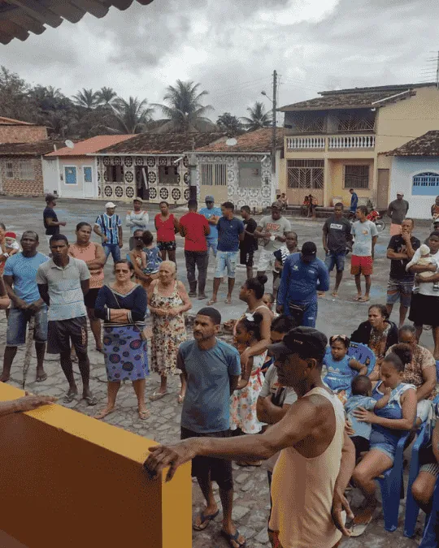

Time Real São Francisco · Cachoeira (BA)
65 jovens, um time e um vice-campeonato
Com treinador, uniformes, bolas e lanche garantidos pelo Instituto, o Real São Francisco reúne 65 jovens de 12 a 17 anos. Em 2025, chegou ao vice-campeonato.

Início / Atuação & Impacto
Conhecimento que vira consciência. Consciência que vira ação.
Nossa atuação conecta Cultura Oceânica, educação, tecnologia, bem-estar e território. São caminhos diferentes com um mesmo destino: aproximar as pessoas do oceano e transformar essa conexão em mudança real.

Conhecer, experimentar, conectar e transformar.

Traduzimos a ciência do oceano em experiências educativas acessíveis, capazes de despertar curiosidade, consciência e pertencimento.
11 livros didáticos autorais, alinhados à BNCC e à Década do Oceano.

Realidade virtual, audiovisual e experiências sensoriais para que qualquer pessoa possa conhecer e viver o universo oceânico.
Experiências levadas a escolas, aeroportos e shopping centers.

Experiências que estimulam a reconexão consciente com a água e com a natureza, promovendo presença e bem-estar.
Vivências no mar, práticas contemplativas e 100 hectares de Mata Atlântica.
Iniciativas ligadas à realidade social, ambiental e cultural dos territórios e das suas comunidades.
2 comunidades quilombolas e 803 famílias de pescadores e marisqueiras.
Atuamos dentro da APA da Baía de Todos-os-Santos, na Reserva Extrativista da Baía do Iguape, onde fica a nossa sede na Mata Quântica.


 100 hectares preservados
100 hectares preservadosA maior baía do Brasil, protegida como APA. É daqui que o nosso território começa.
RESEX onde vivem comunidades quilombolas e pesqueiras, com quem construímos esporte, educação e apoio às famílias.
100 hectares de Mata Atlântica preservada, em processo para se tornar RPPN.
Apoio à Associação de Pescadores e Marisqueiras de Cachoeira.
Time Real São Francisco, de 12 a 17 anos, vice-campeão em 2025.
Presença contínua na Reserva Extrativista da Baía do Iguape.
Coleção do Imersão Azul, alinhada à BNCC e à Década do Oceano.
Com treinador, uniformes, bolas e lanche garantidos pelo Instituto, o Real São Francisco reúne 65 jovens de 12 a 17 anos. Em 2025, chegou ao vice-campeonato.

Apoiamos a Associação de Pescadores e Marisqueiras de Cachoeira, que reúne 803 famílias, e estamos presentes nas datas que importam para as comunidades tradicionais do território.

As irmãs gêmeas Larissa e Stella encontraram no esporte um caminho de disciplina, pertencimento e conquista, e se tornaram campeãs baianas de jiu-jitsu.
Esporte e educação caminham juntos para formar não só atletas, mas cidadãos conscientes do papel do oceano na vida de todos.

65 jovens de 12 a 17 anos, com treinador, uniformes, bolas e lanche. Vice-campeões em 2025.
As irmãs gêmeas Larissa e Stella encontraram no esporte um caminho de disciplina e pertencimento e se tornaram campeãs baianas.
Escolinha de vela e as regatas de canoa da Baía do Iguape, os bordejos.
O trabalho do Instituto junto às comunidades da Baía do Iguape foi reconhecido pela Prefeitura de Cachoeira (BA), que declarou o Instituto Gaia Soul de Utilidade Pública.
Gaia Soul Instituto de Proteção e Educação Ambiental · CNPJ 34.941.993/0001-18 · Associação sem fins lucrativos fundada em 04/07/2019.

Cada pessoa que embarca leva a Cultura Oceânica mais longe: para mais escolas, mais comunidades e mais gente que nunca viu o mar de perto.